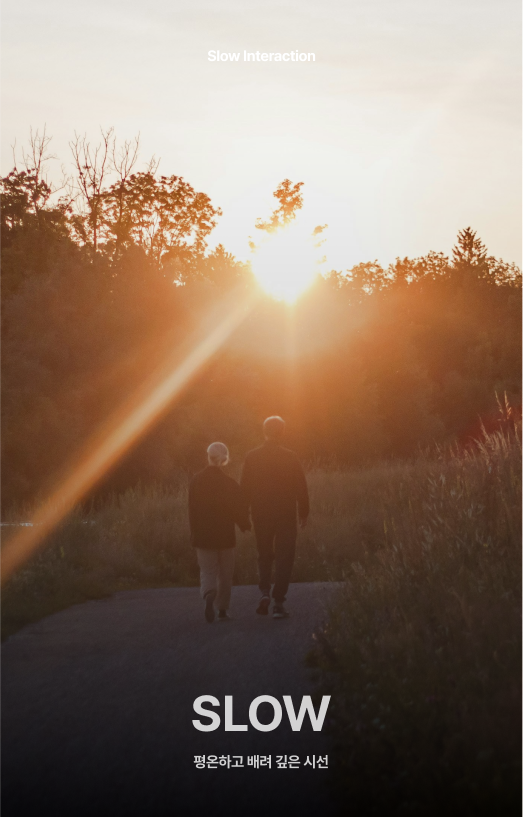
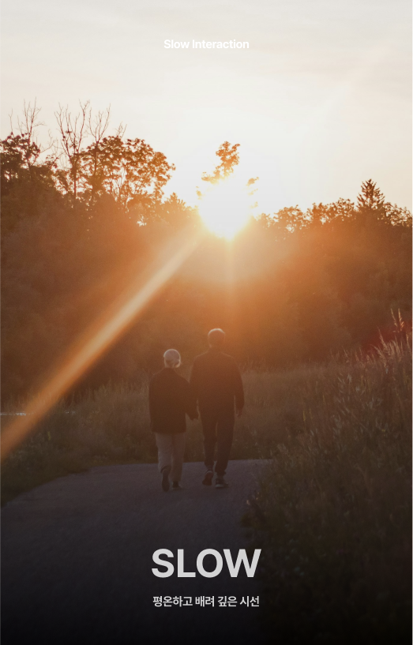

Customer Experience
노년의 마음을 잇는,
느리지만 따뜻한
커뮤니케이션 디자인
느리지만 따뜻한
커뮤니케이션 디자인
시나브로는 노년층 부부의 단절된 소통을 다시 잇기 위해 설계된
커뮤니케이션 헬퍼 서비스입니다.
서로가 가장 소중해지는 노년기에 오히려 대화가 가장 줄어든다는 현실에
주목하여, 부부 사이의 소통을 촉진할 수 있는
제3자의 개입이 필요하다는 문제의식에서 출발했습니다.
시나브로는 서두르지 않고, 천천히 그리고 조심스럽게 부부의 일상 속으로 스며듭니다. 일상의 리듬을 해치지 않으면서 자연스럽게 스며드는 방식으로 서로의 존재와 감정을 다시 환기시키고, 부부로서의 시간이 다시 한 번 꽃피울 수 있도록 돕는 것을 목표로 합니다.
시나브로는 서두르지 않고, 천천히 그리고 조심스럽게 부부의 일상 속으로 스며듭니다. 일상의 리듬을 해치지 않으면서 자연스럽게 스며드는 방식으로 서로의 존재와 감정을 다시 환기시키고, 부부로서의 시간이 다시 한 번 꽃피울 수 있도록 돕는 것을 목표로 합니다.
"Sinabeuro" is a communication helper service designed to
reconnect elderly couples who have grown apart.
It begins with the recognition that, paradoxically, during the stage
of life when partners become most precious to each other—old
age—conversation often dwindles. This insight led to the belief that
gentle intervention by a third party may be necessary to revitalize
their communication.
“Sinabeuro” enters their lives quietly, slowly, and with care. Without disrupting the rhythm of their daily routines, it gently reintroduces awareness of each other’s presence and emotions. The goal is to help them rediscover shared moments as a couple and allow their relationship to blossom once more.
“Sinabeuro” enters their lives quietly, slowly, and with care. Without disrupting the rhythm of their daily routines, it gently reintroduces awareness of each other’s presence and emotions. The goal is to help them rediscover shared moments as a couple and allow their relationship to blossom once more.
 
